Módulo Educação
Cadastros
O menu cadastros consiste na fase inicial do sistema, onde informações como o endereço da escola, número de salas, períodos, ato legal que autorizou o funcionamento da escola, cursos, calendário, entre outros. Neste menu, todos os cadastros deverão ser informados, sem exceção alguma, de acordo com o manual, pois a ausência de uma informação ou cadastrada de forma errada, pode interromper o processo mais adiante, nesta fase, pedimos muita atenção e cautela aos usuários.
Tabelas
Áreas de Trabalho*
Área em que os professores regentes de classe atuam na escola, ou seja, a base curricular que o professor leciona, sendo ela currículo ou área, inicial ou final, conforme mostra a figura 01.
Ex.: Disciplinas de 1ª a 4ª séries e de 5ª a 8ª séries, Disciplinas de 1º a 5º ano e de 6º a 9º ano, Disciplinas de Ensino Infantil - Pré Escola, etc.
F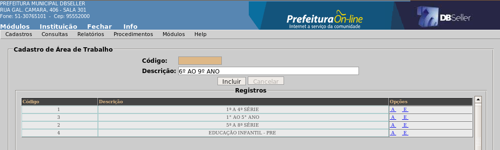
igura
01
Atividades*
Consiste no cadastro das funções exercidas pelos funcionários da escola, onde as mesmas serão vinculadas no cadastro de um recurso humano, conforme mostra a figura 02.
F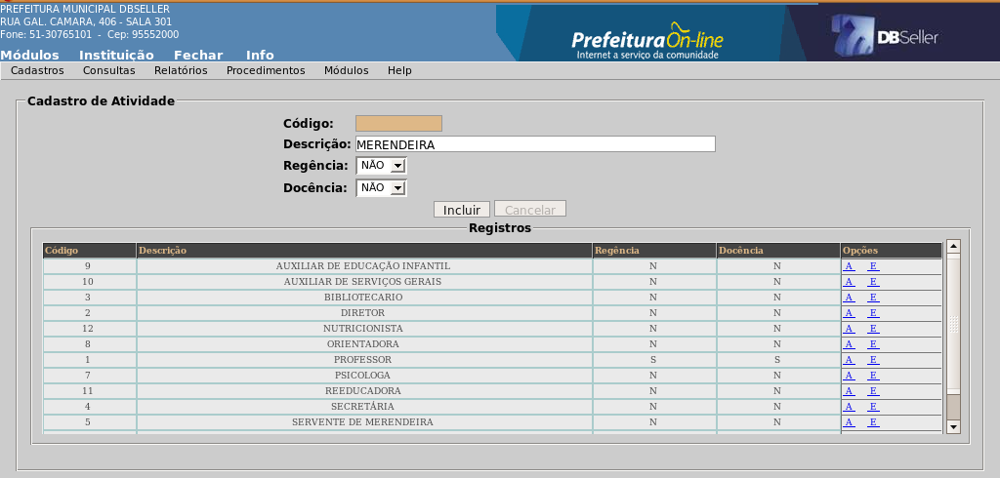
igura
02
Campos
Descrição: nome da atividade.
Regência: informe se a atividade é regente de classe.
Docência: se a atividade entra na efetividade como professor (SIM) ou funcionário (NÃO).
Ex.: Professor (Regente de Classe), Diretor, Cozinheiro, Secretário, Berçarista e etc.
Convenções de Amparo*
É o cadastro das convenções que irão amparar o aluno no ano letivo, sendo ela registrada em qualquer período de avaliação, o sistema irá considerar o aluno aprovado automaticamente (figura 3).
Ex.: SUP - Disciplina eliminada em supletivo particular.
F
igura
03
Cursos de Formação*
É o cadastro dos cursos de formação dos professores e funcionário da escola, conforme mostra a figura 04.
Ex.: Matemática, letras, pedagogia, história, etc.
F
igura
04
Dias da Semana*
É o cadastro dos dias em que possui atividade escolar na escola.
Aba Dias da Semana
Cadastro dos dias da semana, conforme mostra a figura 05.
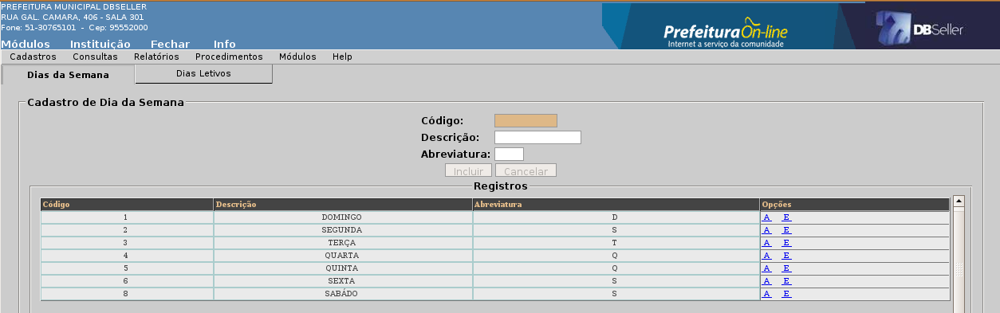
Figura
05
Aba Dias Letivos
Marcar os dias letivos da escola na semana, conforme mostra a figura 06.
F
igura
06
Documentação*
Cadastro de documentos necessários para a matricula dos alunos, para posterior uso na aba de documentação pendente no cadastro dos alunos, conforme mostra a figura 07.
Ex.: Histórico Escolar, Certidões, CPF, Identidade, etc.
F
igura
07
Duração do Calendário*
Cadastro de duração do calendário escolar e sua quantidade de períodos, conforme mostra a figura 08.
Ex.: Anual – 1 período, Semestral – 2 períodos, Trimestral – 3 períodos, etc.
F
igura
08
Escolas de Procedência
Cadastro de escolas de procedência de alunos, para uso em transferências, históricos escolares e cadastro do aluno, conforme mostra a figura 09. Para cadastrar uma escola de procedência, é obrigatório o preenchimento do nome da instituição, os demais dados não são obrigatórios.
F
igura
09
Formas de Avaliação
Inclusão
Cadastro de formas de avaliação que a escola usa para avaliar os alunos, conforme mostra a figura 10.
F
igura
10
Campos
Descrição: coloque o nome do tipo de avaliação que esta sendo cadastrado.
Tipo de Resultado: escolha o tipo de resultado correspondente a tipo de avaliação que esta sendo cadastrada.
→ NOTA: ao selecionar este tipo de resultado, o sistema abrirá os campos relacionados abaixo, conforme mostra a figura 11, após preencher os campos, clique em incluir.
F
igura
11
Menor nota: Consiste na menor nota que o aluno pode receber, se for colocado 10, o aluno não poderá receber uma nota inferior a esta (de 0 a 9).
Maior nota: Consiste na maior nota que o aluno pode receber no período de avaliação.
Variação: Consiste na variação da nota do aluno caso a escola adote casas decimais, caso o aluno fique com nota quebrada, ex. 62,46, a variação é 0,01, pois a nota quebrará de um em um, se a nota for 74,55, a variação é 0,05, pois a nota quebrará de 5 em 5 e assim por diante(0,10 – 1,00 – 5,00 – etc).
Mínimo para Aprovação: O mínimo para aprovação consiste na menor nota que o aluno pode receber para não ser reprovado no período de avaliação, sendo ele determinado normalmente pela secretaria de educação do município. Se o aluno receber uma nota inferior ao mínimo, o sistema automaticamente irá reprová-lo.
→ NÍVEL DE ALFABETIZAÇÃO: ao selecionar este tipo de resultado, o sistema abrirá o campo Mínimo para Aprovação (figura 12), clique em incluir, o sistema irá abrir na tela os campos para cadastro dos níveis de alfabetização, conforme mostra a figura 13.
F
igura
12
F
igura
13
Campos
Nível: Consiste basicamente na sigla/abreviatura da descrição do nível de alfabetização. Ex.: PS1, PS2, S, SA, A e ALF.
Descrição do Nível: Nome por extenso do nível de alfabetização. Ex.: Pré Silábico 1, Pré Silábico 2, Silábico, Silábico Alfabético, Alfabético e ALFabetizado.
No campo REGISTROS ficaram ordenados os níveis conforme selecionado no campo ORDENAR NÍVEIS, para ordená-los, basta selecionar o nível e clicar na seta para a direção desejada.
→ PARECER: ao selecionar este tipo de resultado, você apenas irá digitar a descrição e selecionar o tipo de resultado “parecer”, o sistema abrirá um campo onde será marcado se o parecer do aluno será armazenado ou não, conforme mostra a figura 06.
F
igura
06
Alteração
Neste menu o sistema permitirá alterar todo e qualquer campo descrito acima, com exceção do campo Tipo de Resultado, basta selecionar a forma de avaliação a ser alterada.
Exclusão
O sistema somente permitirá a exclusão de uma forma de avaliação, caso esta não esteja vinculada a nenhum procedimento de avaliação.
Necessidades Especiais*
Cadastro de necessidades especiais de alunos, conforme mostra a figura 07.
Ex.: Síndrome de Down, Surdo cegueira, Deficiência Física, etc.
F
igura
07
Modalidades de Ensino*
Cadastro das modalidades de ensino que as escolas do município estão autorizadas a lecionar, conforme mostra a figura 08.
Ex.: Educação Básica (Ensino Regular), Educação Especial e Educação de Jovens e Adultos.
F
igura
08
Motivo de Exclusão de Matrícula*
Cadastro motivo pelo qual a escola esta efetuando a exclusão da matrícula de um aluno, para ficar registrado em sua movimentação, conforme mostra a figura 09.
F
igura
09
F
igura
10
Pareceres
Cadastro dos pareceres usados para avaliar os alunos em sala de aula ou observações que serão dadas a eles, conforme mostra a figura 11. O sistema também possibilita a criação e alteração da ordem dos pareceres clicando no botão ordenar pareceres, o sistema abrirá uma função onde será selecionado o parecer, mova-o para a direção desejada, após, marque a ordem em que ficará o parecer, clique em confirmar (figura 12), o sistema retornará para a tela de cadastros.
F
igura
11
F
igura
12
Pareceres (Legendas)
Cadastro das legendas que irão complementar os pareceres, por exemplo, se o parecer que o aluno estiver recebendo refira-se sobre o conteúdo que o professor ministrou em um determinado período de avaliação, esta legenda servirá para mostrar a evolução do aluno no conteúdo mencionado, conforme mostra a figura 13.
Ex.: Bom, ótimo, regular, sim, não, ás vezes e etc.
F
igura
13
Períodos de Aula*
Cadastro dos períodos em que são ministradas as aulas e a ordenação dos mesmos, conforme mostra a figura 14.
Ex.: 1°, 2°, 3°, 4°, 5°, etc.
F
igura
14
Períodos de Avaliação*
Cadastro dos períodos de avaliação, ou seja, intervalo de tempo contido no calendário escolar estipulado pela Secretaria de Educação, no qual o aluno será avaliado, isto é, recebe uma nota, conceito ou parecer, conforme mostra a figura 15.
Ex.: Primeiro Semestre, Segundo Bimestre, Terceiro Trimestre, Recuperação Terapêutica, etc.
F
igura
15
Regimes de Trabalho*
Cadastro do regime de trabalho dos recursos humanos da escola. Onde será informado o total de horas de trabalho semanal da matrícula do recurso na prefeitura, conforme mostra a figura 16.
Ex.: 20 horas, 33 horas, 40 horas e etc.
F
igura
16
Resultados*
Cadastro dos resultados que irão compor o procedimento de avaliação das turmas, conforme mostra a figura 17.
Ex.: Média dos Períodos, Nota Final, Media Final, Parecer Final, etc.
F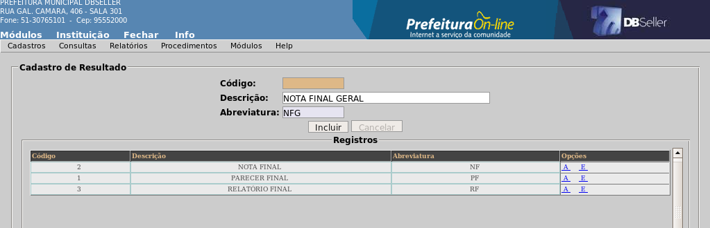
igura
17
Tipos de Atos Legais*
Cadastro dos tipos de atos legais que autorizaram o funcionamento das escolas, conforme mostra a figura 18.
Ex.: Decreto, Lei, Portaria, etc.
F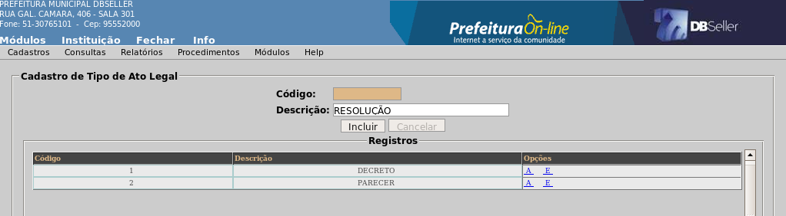
igura
18
Tipos de Eventos*
Cadastro dos tipos de eventos que serão utilizados na criação do calendário escolar, conforme mostra a figura 19.
Ex.: Feriado, Sábado Letivo, Conselho de Classe, Recesso Escolar, etc.
F
igura
19
Tipos de Formação*
Cadastro dos tipos de formação dos professores, para uso no cadastro da formação do recurso humano, conforme mostra a figura 20.
Ex.: Licenciatura, Bacharelado, Pós-graduação, etc.
F
igura
20
Tipos de Salas*
Neste item serão cadastrados todos os tipos de salas existentes nas escolas, conforme mostra a figura 21.
Ex.: Sala de Aula, Laboratório, Secretaria, etc.
F
igura
21
Tipos de Telefones*
Cadastro dos tipos de telefones da escola e recurso humano, conforme mostra a figura 22.
Ex.: Comercial, Residencial, Fax, Celular, etc.
F
igura
22
Turnos*
Neste item serão cadastrados todos os turnos em que as escolas atuam, para o cadastro do curso, turma, períodos e alunos, conforme mostra a figura 23.
Ex.: Manhã, Tarde, Noite, Integral, etc.
F
igura
23
Escola
Aba Geral
Dados cadastrais da Escola como endereço, código do INEP, mantenedora e etc, conforme mostra a figura 10.
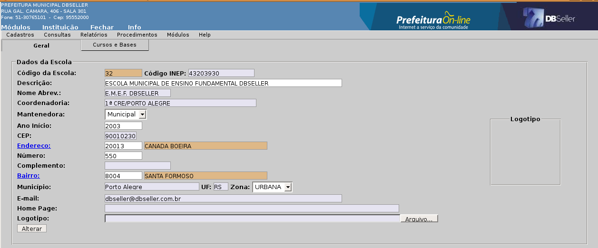
Figura
10
Aba Cursos e Bases
Consulta dos cursos e bases da escola, conforme mostra a figura 11.

Figura
11
Dados da Escola
Aba Geral
Dados cadastrais da Escola como endereço, código do INEP, mantenedora e etc, conforme mostra a figura 10.
Aba Telefones
Para cadastrar os telefones da escola, clique no link TIPO DE TELEFONE, abrirá uma função de pesquisa com os tipos de telefone (figura 13), selecione o tipo e digite o número, conforme mostra a figura 12.
F
igura
12
F
igura
13
Aba Períodos
Cadastro dos horários e turnos que a escola utiliza. Clique no link TURNO, abrirá uma função de pesquisa com os turnos (figura 15), selecione o turno, clique em PERÍODO DE AULA, abrirá outra função de pesquisa com os períodos (figura 16), informe a hora de início e à hora de término, e hora de inicio não deve anteceder a hora de término do período anterior, conforme mostra a figura 14.
F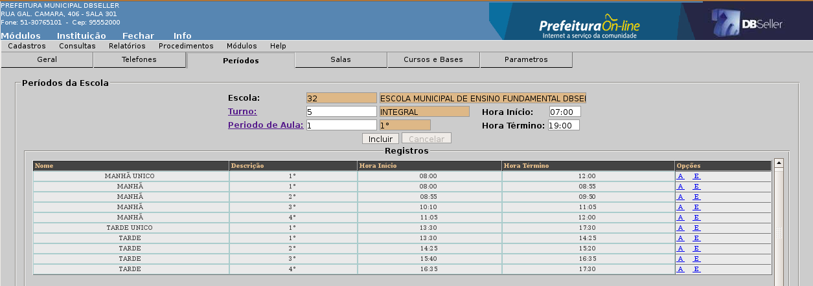
igura
14
F
igura
15
F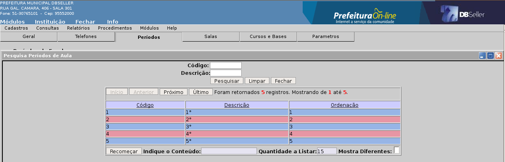
igura
16
Aba Salas
Cadastro de todas as salas da escola, como sala de aula, secretaria, biblioteca, bem como sua capacidade.
Clique no link TIPO DE SALA, abrirá uma função de pesquisa com os tipos de salas (figura 18), selecione o tipo, informe a descrição da sala (nome), a capacidade da mesma e se esta é própria da escola, conforme mostra a figura 17.
F
igura
17
F
igura
18
Aba Cursos e Bases
Consulta dos cursos e bases da escola, conforme mostra a figura 11.
Aba Parâmetros
Nesta aba ficam os parâmetros do sistema, conforme mostra a figura 19.
F
igura
19
Parâmetros
Notas com casas decimais: Se for marcado SIM, o sistema mostra nos relatórios as casas decimais depois da vírgula.
Calcular média parcial: O sistema irá calcular a média parcial dos períodos já informados quando o procedimento de avaliação for média ponderada, informando a nota real do aluno.
Atos e justificativas legais
Atos Legais
Inclusão
Cadastro dos atos legais que regulamentam o funcionamento da escola, seus cursos e bases curriculares, conforme mostra a figura 20.
F
igura
20
Campos
Número: Número do alto legal.
Finalidade: Finalidade para o qual foi emitido.
Tipo: Tipo de ato que foi expedido, decreto, portaria, parecer e etc.
Competência: Responsável pela instituição, Municipal, Estadual ou Federal.
Ano: Ano em que foi emitido o ato legal.
Órgão Emitente: Órgão que emitiu o ato legal.
Vigência: Data em que passou a vigorar o ato.
Aprovação: Data em que foi aprovado o ato.
Publicação: Data da publicação do ato.
Alteração
O sistema permitirá alterar todos os campos relacionados acima, basta selecionar o ato desejado.
Exclusão
O sistema somente irá permitir a exclusão de um ato, caso este não esteja vinculado a nenhum curso ou base curricular.
Justificativas Legais
Inclusão
É o texto que descreve situações de dispensas e amparos, referindo-se ao embasamento legal destes casos de exceção, conforme mostra a figura 21.
F
igura
21
Campos
Descrição: Texto que irá justificar a dispensa.
Ativo: Se a justificativa esta ativa ou não.
Ex.: Atestado Médico, Atestado de Óbito, Aluno dispensado na pratica em disciplina educação física e etc.
Alteração
O sistema permitirá alterar todos os campos relacionados acima, basta selecionar a justificativa desejada.
Exclusão
O sistema somente irá permitir a exclusão de uma justificativa, caso esta não esteja vinculada a nenhuma ação de abono ou amparo de um aluno.
Disciplinas
Cadastro das disciplinas que compõem as bases curriculares dos ensinos, informando a descrição e abreviatura, conforme mostra a figura.
Ex.: Matemática, Geografia, História, etc.
F
igura
22
Níveis de Ensino
Inclusão
Aba Ensino
Cadastro dos níveis de ensinos oferecidos pela escola, conforme mostra a figura 23.
F
igura
23
Campos
Modalidade de Ensino: Modalidade de ensino na qual se enquadra o nível de ensino que esta sendo cadastrado, ao clicar neste link, o sistema abrirá uma função de pesquisa com as modalidades de ensino, selecione a modalidade desejada.
F
igura
24
Descrição: Informe o nome do nível de ensino que esta sendo cadastrado.
Ex.: Ensino Infantil – Pré Escola, Ensino Fundamental, Ensino Fundamental 8 anos e etc.
Abreviatura: Informe a abreviatura do nível de ensino.
Aba Disciplinas
Nesta aba serão marcadas quais as disciplinas que este nível de ensino terá em sua base curricular, para selecionar a disciplina, basta clicar no checkbox, após marcar todas as disciplinas deste ensino, clique em salvar, conforme mostra a figura 25.
F
igura
25
Alteração
O sistema permitirá alterar todos os campos relacionados acima, basta selecionar o nível de ensino a ser alterado.
Exclusão
O sistema somente irá permitir a exclusão de um nível de ensino, caso este não esteja vinculado a nenhum curso.
Séries
Cadastro das séries conforme cada ensino selecione o nível de ensino na qual será informado as séries (figura 26), o sistema abrirá na tela os campos para cadastro das séries, conforme mostra a figura 27.
F
igura
26
F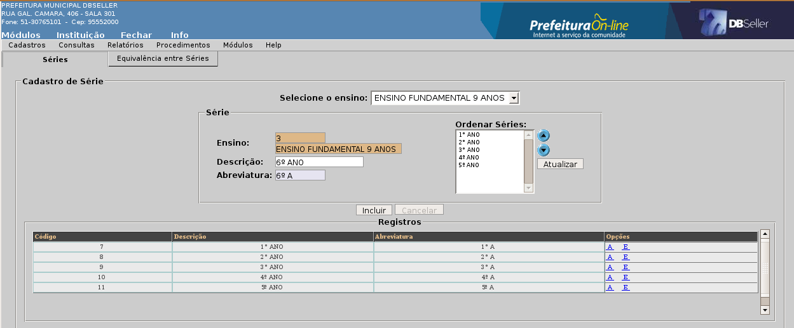
igura
27
Campos
Descrição: Informe o nome da série.
Abreviatura: Descrição abreviada da série.
Ex.: 1ª Série, 2ª Série, 3ª Série, 1° Ano, 2° Ano, 3° Ano, totalidade 1 e etc.
Aba Equivalência entre Séries
Nesta aba será informada a equivalência das séries entre os ensinos, ou seja, se um aluno pedir transferência para outras modalidades, aqui será marcada a série equivalente à série que ele esta saindo.
Para marcar as séries equivalentes, basta selecionar o nível de ensino e a série na qual irá equivaler, o sistema abrirá na tela um campo com as séries dos demais níveis de ensino, conforme mostra a figura 28, selecione as séries equivalentes e clique no botão salva.
F
igura
28
Para ver todas as séries equivalentes, basta clicar no botão “Ver quadro Geral”, o sistema abrirá outra função (figura 29).
F
igura
29
Cursos
Inclusão
Cadastro dos cursos oferecidos pelas escolas do município, conforme mostra a figura 30.
F
igura
30
Campos
Descrição: Nome do curso.
Ensino: Nível de ensino a que se refere o curso, clique no link, o sistema abrirá a função de pesquisa com todos os níveis de ensinos, conforme mostra a figura 31.
F
igura
31
Incluir no Histórico: informar “SIM” se curso vai gerar histórico para o aluno após o encerramento das avaliações ou “NÃO” se este não gerará o histórico.
Alteração
O sistema somente irá permitir a alteração dos campos descrição e incluir no histórico, os demais campos não serão habilitados.
Exclusão
O sistema somente irá permitir a exclusão de um curso, caso este não esteja vinculado a nenhuma escola ou base curricular.
Cursos na Escola
Vincular Curso
Vincular os cursos que a escola esta autorizada a ensinar. Ao acessar esta rotina o sistema abrirá uma função de pesquisa com os cursos que foram cadastrados, selecione o curso a ser vinculado, conforme mostra a figura 32.
F
igura
32
Aba Geral
Nesta aba você apenas irá visualizar as informações do curso que será vinculado, conforme mostra a figura 33.
F
igura
33
Campos
Descrição: Nome do curso que será vinculado.
Ensino: Nível de ensino a que se refere o curso.
Incluir no Histórico: informa se curso vai gerar histórico para o aluno após o encerramento das avaliações.
Aba Turno
Para informar os turnos em que este curso será lecionado na escola, clique no link TURNO, abrirá uma função de pesquisa com todos os turnos (figura 35), selecione o turno e clique em INCLUIR, conforme mostra a figura 34.
F
igura
34
F
igura
35
Aba Escolas
Para associar o curso à escola, clique no link ATO LEGAL, abrirá uma função de pesquisa com todos os atos legais (figura 37), selecione o ato que regulamenta este curso, informe se o curso está ativo ou não na escola, conforme mostra a figura 36.
F
igura
36
F
igura
37
Obs.: Se a escola possuir apenas um registro de ato legal, o sistema buscará automaticamente e não abrirá a função de pesquisa.
Calendários
Inclusão
Aba Geral
Define as datas de início e fim dos períodos de avaliação, letivos e não letivos, para uma etapa da vida escolar dos alunos. Oferece informações sobre o número de dias e semanas letivas, conforme mostra a figura 38. A escola pode ter vários calendários em andamento ao mesmo tempo.
F
igura
38
Campos
Descrição: Nome do calendário com indicador do ano.
Duração: Período total do calendário. Para informar este campo, basta clicar no link DURAÇÃO, o sistema abrirá uma função de pesquisa com os períodos de duração do calendário (figura 39).
F
igura
39
Ano: ano e período em que irá vigorar o calendário.
Data Inicial: Data válida para inicio do ano letivo, dia em que iniciaram as aulas.
Data Final: Data válida para finalizar o ano letivo, ultimo dia de aula.
Data Resultado Final: Data limite para divulgação do resultado das avaliações finais deste calendário.
Dias Letivos e Semanas Letivas: serão calculados pelo sistema após a definição dos períodos de avaliação do calendário (figura 41).
Calendário Anterior: Calendário que precede o calendário atual. Caso haja um calendário anterior é obrigatório o preenchimento deste campo, clique no link CALENDÁRIO ANTERIOR, o sistema abrirá uma função de pesquisa com a relação dos calendários (figura 40), selecione o calendário desejado. O sistema somente irá transportar os dados dos alunos se este for vinculado ao novo calendário (alunos aprovados, reprovados, notas, históricos entre outros, neste calendário).
F
igura
40
Aba Períodos de Avaliação
Contêm as principais informações sobre os períodos em que o aluno será avaliado. As datas de inicio e fim de cada período deve ser compatível entre si, isto é, não devem se sobrepor quando apurarem freqüência e carga horária realizada, bem como nenhum dos períodos de avaliação deve estar fora dos limites do período de validade do calendário, conforme mostra a figura 41.
F
igura
41
Campos
Período de Avaliação: Ao clicar neste link o sistema abrirá uma função de pesquisa com os períodos de avaliação (figura 42).
F
igura
42
Data Inicial: data válida para inicio do período de avaliação.
Data Final: data válida para finalizar do período de avaliação.
Dias Letivos e Semanas Letivas: após a digitação da data inicial e final do período clique na tela, o sistema irá carregar e calcular os dias e semanas letivas automaticamente.
Total de Dias e Total de Semanas: informa o total de dias e semanas letivas conforme os períodos já cadastrados, o sistema informará este campo automaticamente.
Aba Feriados e Eventos
Contêm as informações sobre os dias que devem ser desconsiderados na contagem de dias do calendário, isto é, feriados, recesso escolar e etc. Após a inclusão do calendário na aba Geral, o sistema irá cadastrar os principais feriados nacionais que estão entre a data inicial e final do calendário considerando estes como dias não letivos, podendo ser adicionados, alterados ou excluídos mais feriados nesta aba, informando se estes serão dias letivos ou não, conforme mostra a figura 43. O sistema irá recalcular os dias letivos após cada inclusão, alteração ou exclusão. Ao incluir um feriado ou evento letivo, este ficará registrado no campo “Feriados e Eventos Letivos”, ficando separado dos “não letivos”.

Figura
43
Campos
Tipo de Evento: define o tipo de evento da data. Clique no link TIPO DE EVENTO, o sistema abrirá uma função de pesquisa com todos os tipos de eventos (figura 44).
F
igura
44
Descrição: Nome do feriado.
Data do feriado: Data válida para o feriado.
Dia da semana: O sistema preencherá automaticamente o dia da semana conforme a data escolhida.
Dia letivo: Caso haja aula no dia do feriado informado, este campo é utilizado para o cálculo de dias letivos do calendário.
Alteração
O sistema permitirá alterar todos os campos de todas as abas do calendário selecionado.
Exclusão
O sistema somente irá permitir a exclusão de um calendário, caso este não esteja vinculado a nenhuma turma.
Bases Curriculares
Inclusão
Aba Geral
Cadastro das bases curriculares que definem a divisão dos ensinos, regulamentada pela LDB, a ordenação e a seqüência das disciplinas fixadas para um determinado curso, conforme mostra a figura 45.
F
igura
45
Campos
Curso: Ao clicar neste link, abrirá uma função de pesquisa (figura 46), selecione o curso desejado.
F
igura
46
Descrição: Nome da base curricular.
Ex.: Anos Iniciais, Anos Finais, Séries Iniciais, Séries Finais, Totalidades Iniciais e Totalidades Finais.
Turno: turno a que se destina a base curricular.
Regime de Matrícula: Ao informar o regime de matrícula série/ano, o sistema mostrará na tela os Links “Série/Ano Inicial e Série/Ano Final”, clique em um de cada vez, o sistema abrirá a função de pesquisa com todas as séries/anos/totalidades do curso selecionado (figura 47), selecione a série que inicia a base e em seguida clique no outro link para selecionar a série que finalizará a base.
F
igura
47
Freqüência: informar se a freqüência deverá ser calculada por dias letivos ou períodos de aula.
Controle de Freqüência: informar se a freqüência deverá ser apurada por disciplina individualizada ou de forma globalizada (Ex.: para o ensino até a 4ª serie, o aluno recebe apenas um número de faltas para todas as disciplinas, neste caso o controle de freqüência seria globalizado, mas os alunos da 5ª série recebem as faltas separadas por disciplina, então o controle de freqüência seria individual por disciplina).
Disciplina Global: Este campo será habilitado caso seja informado freqüência globalizada, neste caso, informe a disciplina global e a quantidade de dias letivos/períodos por semana, ao clicar neste link o sistema abrirá uma função de pesquisa com todas as disciplinas vinculadas a este curso (figura 48), selecione a disciplina, o sistema habilitara o campo Falta no diário de classe da turma somente nesta disciplina.
F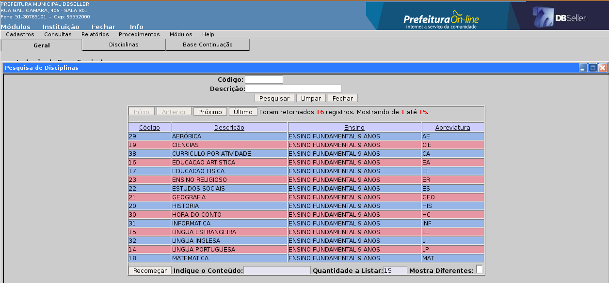
igura
48
Aba Disciplinas
Cadastro das disciplinas que irão compor a base curricular.
Matrícula por Série: informe as disciplinas e a quantidade de períodos por semana de cada disciplina (caso a freqüência for globalizada não será necessário informar a quantidade de períodos, pois já foi informada esta quantidade na disciplina global (figura 45)). Clique no link disciplina, o sistema abrirá a função de pesquisa (figura 48), selecione a disciplina, informe a quantidade de períodos e clique em incluir (figura 49). O sistema abrirá outra função perguntando se esta disciplina também pertence ao currículo das demais séries, selecione todas as séries e clique em confirmar, conforme mostra a figura 50.
F
igura
49
F
igura
50
Aba Base Continuação
Informar a base curricular de continuação da base que esta sendo cadastrada, para efetuar este procedimento, basta clicar no link A do registro existente nesta aba (figura 51), o sistema carregará os dados para os campos acima.
F
igura
51
Campos
Ato legal: informar o ato legal que regulamenta a base curricular, clique no link para buscar o ato legal que regulamenta a base de continuação (figura 37).
Base Continuação: associar esta base a uma base de continuação. Os alunos que terminam esta base curricular são automaticamente matriculados na base curricular de continuação. Ao clicar no link o sistema abrirá a função de pesquisa com todas as bases curriculares cadastradas (figura 52).
Obs.: Somente poderá ser vinculada a base final depois que a mesma for cadastrada no sistema.
F
igura
52
Alteração
O sistema permitirá alterar todos os campos de todas as abas da base curricular selecionada.
Procedimentos de Avaliação
Inclusão
Aba Geral
No procedimento de avaliação você criará a fórmula de avaliação, informando se esta é bimestral, trimestral, semestral, associando a esta, às avaliações periódicas e resultados de avaliação.
Forma de Avaliação: informar a forma de avaliação do procedimento (Nota, Nível/Conceito ou Parecer), clique no link FORMA DE AVALIAÇÃO, o sistema abrirá uma função de pesquisa com as formas de avaliação cadastradas na rotina Forma de Avaliação (figura 54). Esta forma de avaliação é que vai gerar o resultado final do procedimento. Cada avaliação periódica poderá conter uma forma de avaliação diferente da outra, mas o sistema só irá calcular as avaliações que contenham a mesma forma de avaliação deste campo, conforme mostra a figura 53.
F
igura
53
Campos
Formas de Avaliação: Selecione a forma de avaliação na função de pesquisa, conforme mostra a figura 54.
F
igura
54
Descrição: Nome do procedimento de avaliação.
Freqüência mínima para aprovação: Percentual mínimo de freqüência para aprovação.
Ex.: Procedimento de avaliação “Parecer e Nota”
Forma de Avaliação do Procedimento = NOTA (0 a 100).
→ Avaliação Periódica 1 → Forma de Avaliação = PARECER ( 0 )
→ Avaliação Periódica 2 → Forma de Avaliação = PARECER ( 0 )
Avaliação Periódica 3 → Forma de Avaliação = NOTA (0 a 100)
Avaliação Periódica 4 → Forma de Avaliação = NOTA (0 a 100)
Tipo de Obtenção do Resultado = MÉDIA ARITIMÉTICA
Resultado 1 → ((3ª AP + 4ª AP) / 2 = RF) → Avaliação Periódica 3 + Avaliação Periódica 4) dividido por 2 = Resultado Final.
→ Avaliação Periódica 1 e Avaliação Periódica 2 serão descartadas, pois não contém a mesma forma de avaliação do procedimento.
Aba Avaliações
As avaliações do procedimento serão divididas em dois grupos: avaliações periódicas (1° BIM, 2° BIM, etc.) e resultados ( Média Final, Nota Final, etc.). Não será permitido incluir um resultado de avaliação sem antes ter incluído uma avaliação periódica. Escolha um dos dois e clique em adicionar, conforme mostra a figura 55.
F
igura
55
Adicionar Avaliações Periódicas:
Após clicar em adicionar o sistema abrirá na tela os campos referentes ao período de avaliação, conforme mostra a figura 56.
F
igura
56
Campos
Período de Avaliação: informe o período de avaliação, ao clicar neste link, o sistema abrirá uma função de pesquisa com todos os períodos de avaliação cadastrados no sistema (figura 57).
F
igura
57
Forma de Avaliação: informe a forma de avaliação, ao clicar neste link, o sistema abrirá uma função de pesquisa com todas as formas de avaliação cadastradas no sistema (figura 54).
Aparece no Boletim: informe se a avaliação periódica irá aparecer no boletim de desempenho do aluno, o sistema já traz marcado SIM como opção.
Aproveitamento desta avaliação: informe se esta avaliação periódica irá depender de outra avaliação periódica ou de outro resultado de avaliação. No cadastro da primeira avaliação periódica este campo virá desabilitado, pois não terá nenhuma outra avaliação para dependência.
Ex.: No caso de primeira avaliação, todos os alunos recebem aproveitamento. Podem haver casos como "recuperação terapêutica" que só exigirão avaliação para alunos que não obtiveram aproveitamento em "Nota Média dos períodos", pôr exemplo, que é a avaliação anterior, para estes casos selecione na lista a avaliação anterior.
Adicionar Resultados:
Aba Geral (Resultados)
No resultado de avaliação, você informará como o sistema deve obter o resultado final de uma avaliação, quais as médias de aprovação, recuperação terapêutica e reprovação, conforme mostra a figura 58.
F
igura
58
Campos
Resultado: informe o resultado cumulativo, ao clicar neste link, o sistema abrirá uma função de pesquisa com os tipos de resultados (figura 59).
F igura
59
igura
59
Forma de Avaliação: informe a forma de avaliação deste resultado. Somente serão habilitadas as formas de avaliação do mesmo tipo da forma de avaliação do procedimento. Selecione na função de pesquisa a forma de avaliação desejada (figura 60).
F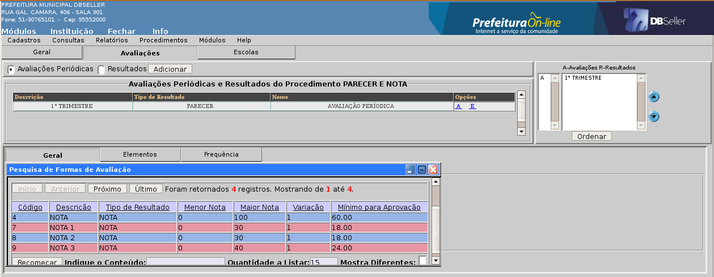
igura
60
Mínimo para Aprovação (somente para NOTA e CONCEITO): este campo já vem marcado com o valor mínimo para aprovação da forma de avaliação escolhida. Caso queira mudar este valor clique em Definir e escolha outro valor.
Parâmetros do Resultado
Após a inclusão, o sistema abrirá no lado direito da tela os parâmetros de configuração do resultado, conforme mostra a figura 61.
F
igura
61
Forma de obtenção: maneira com que será obtido o resultado, conforme a forma de avaliação.
→ Nota: Atribuído, Média Aritmética, Média Ponderada, Soma, Maior Nota, Última Nota.
→ Nível/Conceito: Atribuído, Maior Nível, Último Nível.
→ Parecer: Atribuído.
Escolhendo opção diferente de Atribuído, irá habilitar a aba Elementos (figura 61) para escolha das avaliações que irão compor o cálculo deste resultado.
Gera Resultado Final: se este resultado será utilizado para o calculo do resultado final. Escolhendo SIM, habilitará a aba Freqüência (figura 64) para escolha das avaliações que irão compor o cálculo do percentual de freqüência deste resultado.
Aparece no Boletim: se este resultado deverá ser impresso no boletim do aluno.
Reprova por Freqüência: se o resultado irá reprovar por freqüência. Só será habilitado após informar os períodos de avaliações que irão compor o cálculo da freqüência (Figura 64).
Arredondar Média: caso a forma de avaliação deste resultado seja NOTA, informar se o sistema deverá arredondar o valor do resultado final.
Aba Elementos (Resultados)
Campos
Elementos: informe as avaliações periódicas que irão compor o cálculo deste resultado (figura 62). Ao clicar neste link o sistema abrirá a função de pesquisa com as avaliações com o mesmo tipo de forma de avaliação do procedimento, conforme mostra a figura 63.
F
igura
62
F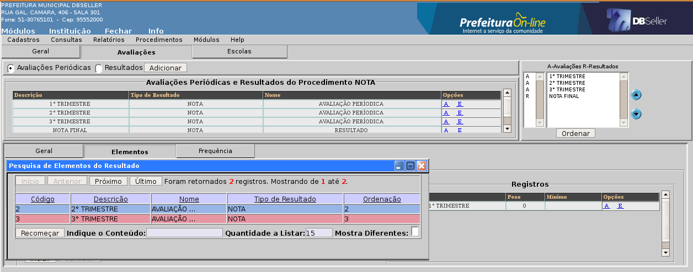igura 63
Mínimo: informe algum valor caso você queira que este elemento tenha um valor mínimo para aprovação diferente do mínimo informado na forma de avaliação, independentemente do cálculo do resultado.
Ex.: Caso o aluno tenha conseguido atingir o mínimo no cálculo, mas não atingiu o mínimo neste elemento será considera reprovado.
Obs.: Caso a forma de obtenção seja Média Ponderada o sistema habilitará o campo “PESO” do elemento.
Aba Freqüência (Resultados)
Informe os períodos de avaliações que irão compor o cálculo do percentual de freqüência deste resultado clicando no link Período de Avaliação (figura 65), após clique em Incluir, conforme mostra a figura 65.
F
igura
64
F
igura
65
Obs.: Se for cadastrado fora de ordem as avaliações e resultados, no lado direito da tela existe um campo para ordenar em seqüência do primeiro para o último, marque o período e mova-o com as setas e clique em Ordenar, conforme mostra a figura 66.
F
igura
66
Alteração
O sistema permitirá alterar os campos descrição e freqüência mínima para aprovação na aba geral, na aba avaliações o sistema permitirá alterar os campos forma de avaliação das avaliações periódicas e do resultado estará habilitado para alteração os parâmetros, aba elementos e aba freqüência.
Turmas
Inclusão
Neste item será feito o cadastro da turma, deverão ser informados obrigatoriamente todos os campos conforme mostra a figura 67. O procedimento de avaliação deverá ter os mesmos períodos de avaliação do calendário informado. Após escolher a sala, o número de vagas será preenchido com a capacidade da sala escolhida, podendo ser alterado. O número de alunos matriculados e vagas restantes serão calculados automaticamente após cada matrícula efetuada na turma.
F
igura
67
Campos
Código: O sistema informará automaticamente o código após a inclusão.
Nome da Turma: Informe o nome pelo qual a turma foi registrada no censo, o mesmo deverá ser composto série/ano e turno, ou seja, se a escola possuir três turmas de 1º ano, duas no turno da manhã e uma no turno da tarde, as mesmas deverão ter os seguintes nomes: 111, 112 e 121 ou 1ºMA, 1ºMB e 1ºTA (série/ano + turno + ordem da turma).
Escola: O sistema informa automaticamente a escola.
Calendário: Ao clicar no link o sistema abrirá a função de pesquisa com os calendários cadastrados no sistema (figura 68).
F
igura
68
Curso: Após selecionar a base curricular o sistema informará este campo automaticamente.
Base Curricular: Ao clicar no link o sistema abrirá a função de pesquisa com todas as bases cadastradas no sistema (figura 68).
F
igura
68
Regime de Matrícula: Após selecionar a base curricular o sistema informará este campo automaticamente.
Série/Ano: Este link somente abrirá após ser informado o campo Regime de Matrícula, clicando neste link, o sistema abrirá uma função de pesquisa com as séries/anos (figura 69), selecione a da turma a ser cadastrada.
F
igura
69
Proc. de Avaliação: Ao clicar no link o sistema abrirá a função de pesquisa com todos os procedimentos de avaliação cadastrados no sistema (figura 70).
F
igura
70
Turno: Ao clicar no link o sistema abrirá a função de pesquisa com todos os turnos cadastrados no sistema (figura 71)
F
igura
71
Sala/Capacidade: Ao clicar no link o sistema abrirá a função de pesquisa com todas as salas de aula cadastradas no sistema (figura 72), selecione a sala desejada, o sistema irá informar o campo Capacidade automaticamente.
F
igura
62
Vagas/Alunos Matriculados/Vagas restantes: O sistema irá informar estes campos automaticamente, o campo vagas esta habilitado para ser alterado caso a realidade de vagas não seja igual a capacidade da sala, os demais campos serão modificados a medida que sejam matriculados os alunos, diminuindo o número de vagas restantes.
Aprovação Automática: Este campo será utilizado normalmente para turmas do ensino infantil, como creche e pré-escola, e nas turmas de 1º ano do ensino 9 anos. Os alunos matriculados nestas turmas terão a aprovação automática para a próxima etapa.
Observações: Campo não obrigatório, a informação cadastrada neste campo será visível nos relatórios da turma.
Turno Inverso: Este campo será utilizado normalmente quando a turma realizar a disciplina Educação Física no turno inverso ao turno principal, ou seja, se a turma realiza as aulas no turno da manhã e somente Educação Física no turno da tarde, devesse informar o turno da tarde, que o sistema abrirá outra grade para que seja possível cadastrar a disciplina. Clique no link para a função de pesquisa com os turnos (figura 71).
Aba Disciplinas
No momento da inclusão da turma, são incluídas automaticamente as disciplinas (regências) conforme a base curricular escolhida. As configurações das regências podem ser atualizadas pela base curricular clicando no botão “Atualizar pela Base”, atualizando todas as alterações efetuadas na base desta turma. Nesta aba também será cadastrada as disciplinas que os alunos desta turma recebem, mas que não pertencem a base curricular, ou seja, disciplinas opcionais (extracurriculares), conforme mostra a figura 73.
pF
igura
73
Campos
Disciplina: Clique no link disciplina, o sistema abrirá a função de pesquisa (figura 48), selecione a disciplina, somente aparecerão às disciplinas que não estiverem vinculadas a base curricular.
Períodos: Quantidade de períodos por semana que a disciplina será lecionada.
Matrícula: informar se esta disciplina terá matrícula obrigatória ou opcional (facultativa).
Freqüência: informar como a disciplina vai controlar a freqüência.
Aba Horários
Corresponde aos dias e horários em que é ministrada a disciplina em uma turma (figura 74). Antes de cadastrar os horários da turma, certifique-se que já informou os horários disponíveis do professor na escola e as disciplinas que ele está habilitado a ministrar (Cadastros/Recursos Humanos).
F
igura
74
Campos
Disciplina: Clique no link, o sistema abrirá a função de pesquisa com as disciplinas informadas na aba disciplina do cadastro da turma (figura 73), selecione a disciplina, conforme mostra a figura 75.
F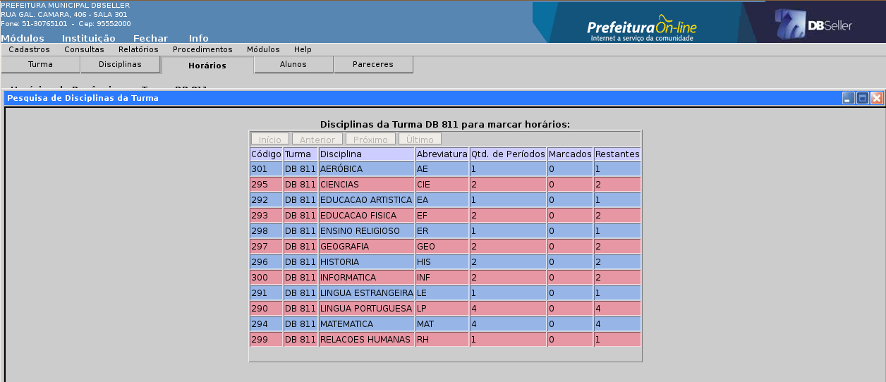
igura
75
Regente: Clique no link regente, o sistema abrirá a função de pesquisa com os regentes que estão habilitados a ministrar a disciplina selecionada, conforme mostra a figura 76.
F
igura
76
Obs.: Após selecionar o regente, o sistema irá colorir os quadros de horários com as cores vermelho e verde, informando em quais períodos o regente selecionado estará disponível, no lado direito da grade terá uma legenda informando o que significa cada cor, conforme mostra a figura 77.
F
igura
77
Obs.: Após informar todos os períodos, selecione o professor conselheiro da turma e clique no botão salvar.
Aba Alunos
Mostra os alunos matriculados na turma (figura 78). Clicando na linha de cada aluno abrirá uma função com informações da matrícula do aluno e um campo para observações abaixo uma tabela com a movimentação de sua matrícula na escola, poderá ainda alterar a data de matricula se necessário, nesta mesma janela poderá ser informado se o aluno com NEE será avaliado por parecer ou não. O combobox Avaliação por Parecer ( Sim ou Não ), somente aparecerá para alunos que tenham NEE. Caso seja informado SIM, no diário de classe, embora a turma que o aluno esteja, seja avaliada por nota ou nível, será informado apenas o parecer, usando a mesma rotina para turmas avaliadas com parecer. Conforme mostra figura 79.
F
igura
78
 Figura
79
Figura
79
Classificar Turma: coloca os alunos em ordem alfabética e numerá-os por esta ordem, se um aluno for matriculado após a classificação, este ficara no final da lista, recebendo o último número da chamada, se a escola preferir colocá-lo na ordem alfabética, esta turma deverá ser reclassificada, clicando no mesmo botão classificar turma novamente, confirmando a reclassificação (figura 80), o sistema abrirá uma função com a relação de alunos e seus números atuais, e outra com os novos números, basta colocar o aluno na ordem desejada usando as setas, marcar o novo número e confirmar a classificação, conforme mostra a figura 81.
F
igura
80
F
igura
81
Aba Pareceres
Nesta aba, vêm todos os pareceres cadastrados na escola (Cadastro/Tabelas/Pareceres (figura 11)). Marque somente os pareceres relacionados a esta turma e clique em salvar, conforme mostra a figura 82. No diário de classe da turma só aparecerá os pareceres selecionados nesta aba.
F
igura
82
Alteração
Neste menu o sistema apenas permitirá alterar os campos nome da turma, freqüência, turno e sala, vagas, aprovação automática, observações e turno adicional da aba turma(figura 67), nas demais abas disciplinas e horários o sistema permite alterar qualquer campo descrito acima.
Exclusão
O sistema apenas permitirá a exclusão de uma turma, caso esta não tenha alunos matriculados.
Recursos Humanos
Cadastro dos recursos humanos da escola, ou seja, os funcionários que lá trabalham.
Inclusão
Aba Geral
Matrícula: Para vincular à matrícula de um recurso humano a escola, clique no link Matrícula (figura 83), o sistema abrirá uma função de pesquisa com todas as matrículas ativas na prefeitura (figura 84). A pesquisa poderá ser direta pela matrícula do recurso humano.
Os dados mostrados na figura 85 não poderão ser alterados, somente visualizados, pois são informações do cadastradas pelo setor de RH da prefeitura. Certifique-se que é o recurso humano que pesquisou e clique em incluir para que o sistema desabilite as abas a seguir.
F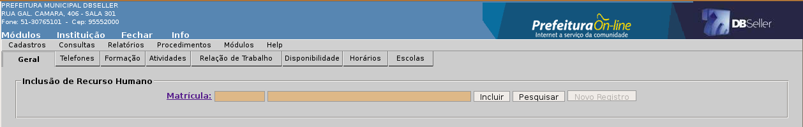
igura
83
F
igura
84
F
igura
85
Aba Telefones
Cadastro dos telefones de contato do recurso humano. Pesquise o tipo de telefone no link telefone (figura 13), digite o número do telefone, o ramal (se possuir) e clique em incluir, conforme mostra a figura 86.
F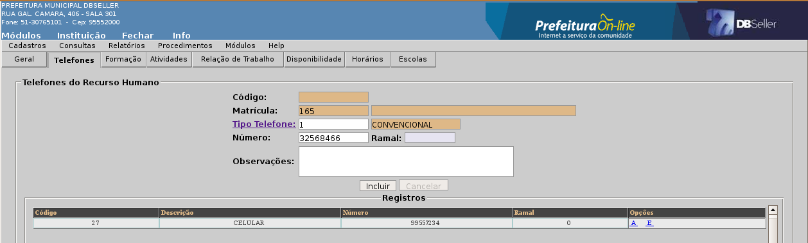
igura
86
Aba Formação
Neste item será informado o curso de formação superior do recurso humano, conforme mostra a figura 87.
F
igura
87
Campos
Curso: Clique no link Curso (figura 87), o sistema abrirá uma função de pesquisa com todos os cursos de formação superior disponibilizados pelo site do Educacenso, conforme mostra a figura 88.
F
igura
88
Tipo de Formação: Clique no link Tipo de Formação (figura 87), o sistema abrirá uma função de pesquisa com todos os tipos de formações disponibilizados pelo site do Educacenso, conforme mostra a figura 89.
F
igura
89
Situação: Informe se o recurso humano concluiu, esta cursando ou cancelou este curso.
Aba Atividade
Cadastro da atividade que o recurso humano exerce na escola. Clique no link Atividade, o sistema abrirá a função de pesquisa com todas as atividades cadastradas no sistema pela secretaria de educação(figura 91), selecione a atividade do recurso humano e a carga horária diária da mesma, ou seja, se um professor possui carga horária de 20 horas, ele estará disponível a escola apenas 4 horas diárias, ou no turno da manhã, tarde, ou noite, conforme mostra a figura 90.
F
igura
90
F
igura
91
Obs.: Se o recurso humano possuir desdobramento de horário, deverá ser informado a quantidade de horas no turno inverso. Lembrando que neste cadastro será apenas informado a carga horário diária do recurso humano.
Aba Relação de Trabalho
No cadastro das relações de trabalho do recurso humano será informada a carga horária semanal, ou seja, a carga horária na qual o recurso humano prestou concurso, conforme mostra a figura 92.
F
igura
92
Campos
Regime de trabalho: Clique no link Regime de Trabalho, o sistema abrirá a função de pesquisa com as cargas horárias cadastradas no sistema pela Secretaria de Educação, conforme mostra a figura 93.
F
igura
93
Se o recurso humano for um professor(regente de classe), o sistema habilitará os relacionados abaixo.
Área de trabalho: Área em que o professor atua, ou seja, base curricular na qual o professor esta habilitado a lecionar, clique no link Área de Trabalho, o sistema abrirá a função de pesquisa(Figura 94).
F
igura
94
Ensino: Clique no link Ensino, o sistema abrirá a função de pesquisa(Figura 95).
F
igura
95
Disciplina: Clique no link disciplina, o sistema abrirá a função de pesquisa (figura 48), selecione a disciplina na qual o professor esta habilitado a lecionar.
Obs.: Repita todo o processo caso o professor esteja habilitado a lecionar mais de uma disciplina.
Aba Disponibilidade
Será informado os horários e períodos que o recurso humano esta disponíveis na escola, conforme mostra a figura 96.
F
igura
96
Clique no quadro correspondente ao horário desejado e ficará gravado neste quadro o código da escola no sistema. Basta clicar novamente para desmarcar o horário. Para marcar um turno inteiro, passe o mouse sobre o nome do turno e clique em marcar tudo. Para marcar uma coluna inteira do dia, passe o mouse sobre o nome do dia e clique em marcar tudo, o mesmo habilita-se para desmarcar tudo, clicando em desmarcar tudo. Ao passar o mouse sobre o código da escola o sistema mostrará o nome da escola na qual o recurso esta disponível neste horário.
Aba Horários
Visualização de todos os horários do professor na escola, informando em que turma este professor esta e que disciplinas esta lecionando, conforme mostra a figura 97.
F
igura
97
Aba Escolas
Visualização de todas as escolas que o recurso humano está vinculado(figura 98). Para excluir o vínculo de um recurso da sua escola basta clicar no link E, o sistema carregará as informações para os campos acima, clique em excluir, aparecerá uma mensagem informando que todas as informações deste recurso serão deletadas, conforme mostra a figura 99.
F
igura
98
F
igura
99
Alteração
O sistema permite alterar todos os campos de todas as abas do cadastro dos recursos humanos, com exceção da aba geral.
Alunos
Cadastro de todos os alunos da escola e da rede, inscritos a uma vaga ou matriculados, informando sua documentação, endereço, histórico, etc.
Inclusão
Aba Dados Pessoais
Antes de incluir um novo aluno, pesquise se o mesmo já se encontra no arquivo do sistema, clique no botão pesquisar, o sistema abrirá uma função0 de pesquisa(figura 100), coloque o nome do aluno dentre o símbolo da porcentagem(%)* e clique em pesquisar, se este não possuir cadastro, feche a página de pesquisa e clique em novo registro, para fazer o cadastro manualmente, digitando todas as informação necessárias, conforme mostra a figura 101. Após incluir os dados desta aba, o sistema habilitará as demais abas para cadastro.
*O símbolo da porcentagem serve como um coringa para uma pesquisa rápida, conforme exemplos abaixo.
Ex1.: %SANTOS → trará todos as informações que finalizarem com SANTOS → Renato Lima dos Santos.
Ex2.: %LIMA% → trará todos as informações que possuirem LIMA em qualquer posição → Renato Lima dos Santos.
Ex3.: RENATO% → trará todos as informações que iniciarem com RENATO → Renato Lima dos Santos.
F
igura
100
Nesta aba será informado os dados principais do aluno, tais como nome, filiação, data de nascimento, sexo, endereço, telefone e nacionalidade.
F
igura
101
Obs.: Os campo dispostos no lado esquerdo da tela são obrigatórios, já os campos dispostos no lado direito não são, sendo usados facultativamente para os alunos matriculados na EJA.
Links
Endereço/Bairro: Ao clicar no link, o sistema abrirá a função de pesquisa com todos os logradouros(figura 102) e bairros(figura 103) cadastrados no sistema pela prefeitura. No lado superior direito da tela tem o botão Libera Endereço, este botão habilita o campo endereço para digitação.
F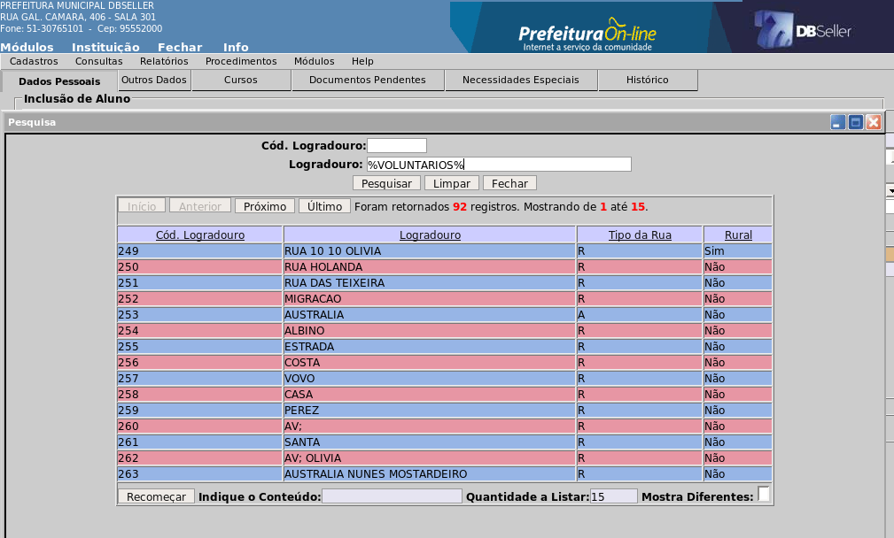
igura
102
F
igura
103
Aba Outros Dados
Continuação dos dados do aluno. Esta aba conterá as informações do responsável legal pelo aluno, certidão de nascimento, naturalidade, transporte escolar, bolsa escola, NIS, passaporte, foto do aluno e etc, conforme mostra a figura 104.
F
igura
104
Obs.: O campo escola de procedência é utilizado como um comparativo, tendo nele, sempre a escola que o aluno concluiu a última série, com o propósito de comparar o desempenho do aluno do local de procedência com a escola atual. Ao clicar neste link, o sistema abrirá a função de pesquisa com todas as escolas ou locais de procedência cadastrados no sistema(tabelas/escolas de procedência). No campo data de procedência será informado a data que o aluno ingressou no local de procedência informado, conforme mostra a figura 105.
F
igura
105
Ex.: Quando o aluno ingressa no 1º ano ou ensino infantil, sua procedência é DO LAR e a data é o dia em que o aluno ingressou, se o mesmo aluno solicitar transferência para outra escola da rede quando estiver cursando o 4º ano, seu local de procedência deverá ser alterado, informando a escola anterior e a data em que ingressou nesta escola, lembrando que este campo somente será alterado se o aluno concluir o ano na escola.
Aba Cursos
Nesta aba poderá ser realizada a matrícula direta do aluno em uma turma que tenha vaga disponível buscando apenas a turma através do link turma, o sistema abrirá a função de pesquisa, informe um dos filtros existentes na função, conforme mostra a figura 107, após selecionar a turma, informe a data da matrícula e clique em incluir, o sistema automaticamente matriculará o aluno na turma, conforme mostra a figura 106. Se o aluno ainda não tiver turma definida, altere o parâmetro de tela de “Matricular Aluno” para “Curso do Aluno”(figura 106 – acima do campo escola), o sistema abrirá outra tela onde deve-se cadastrar qual o Curso, Base Curricular, Calendário, Série, e Turno em que o mesmo irá se inscrever, ficando sua situação como CANDIDATO conforme mostra a figura 108.
F
igura
106
F
igura
107
F
igura
108
Aba Documentos Pendentes
Informar se aluno ficou com algum documento pendente para entregar na momento da matrícula, conforme mostra a figura 109. Ao clicar no link documentos o sistema abrirá a função de pesquisa com os tipos de documentos(figura 110)
F
igura
109
F
igura
110
Aba Necessidades Especiais
Nesta rotina somente será informada caso o aluno seja portador de alguma necessidade especial, o sistema possibilita incluir mais de uma necessidade especial, conforme o diagnóstico do aluno, informando qual destas é mais severa, conforme mostra a figura 111.
F
igura
111
Campos
Necessidades: Ao clicar no link necessidade, o sistema abrirá a função de pesquisa com as necessidades especiais disponibilizadas pelo Educacenso(figura 112).
Apoio Pedagógico: Informe se o aluno possui algum apoio pedagógico.
Tipo de Diagnóstico: Forma em que foi diagnosticado a necessidade especial do aluno.
Os campos ultima alteração e data são informados automaticamente pelo sistema.
Obs.: Caso o aluno seja portador de mais de uma necessidade especial, informe quais destas é a mais severa no campo necessidade maior, basta selecionar a mais severa e clicar em atualizar.
F
igura
112
Aba Histórico
O histórico escolar contém os dados cadastrais do aluno, que consiste nas disciplinas cursadas em todas as séries e a nota final que o aluno recebeu, escolas de procedência dos alunos.
Para informar o histórico retroativo do aluno(manualmente), clique no llink “Nenhum curso no histórico”, o sistema abrirá no lado direito da tela os campos para cadastro inicial do curso em que o aluno concluiu as séries/anos, clique no link, selecione o curso desejado(figura 114) e clique em incluir, conforme mostra a figura 113.
F
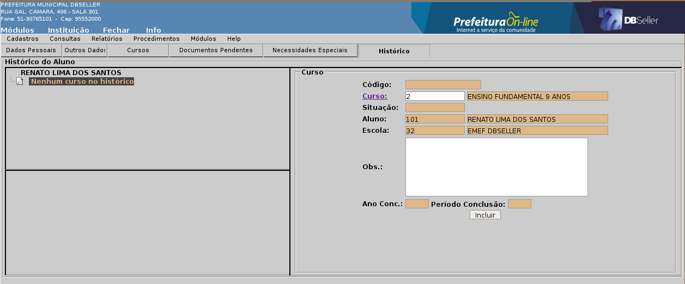igura
113
Figura 114
Após, o sistema mostrará a figura de uma pasta com a descrição do curso escolhido no lado esquerdo da tela, abra a pasta clicando no símbolo de adição(+), feito isso, aparecerá o link “Nenhuma série para este curso”, clique nesta frase, o sistema abrirá no lado direito da tela as opções “escola da rede municipal” ou “outras escolas(fora da rede)”(figura 115), marque a opção desejada e clique em próximo, o sistema abrirá então os campos referentes ao cadastro das séries que o aluno cursou anteriormente, conforme mostra a figura 116.
F igura
115
igura
115
F igura
116
igura
116
Campos
Série/Ano: Ao clicar no link série/ano, o sistema abrirá a função de pesquisa com as séries vinculadas ao curso, conforme mostra a figura 117.
F
 igura
117
igura
117
Ano: Informe o ano em que o aluno cursou a série selecionada.
Período: Período do ano em que o aluno ingressou na escola para concluir a série selecionada.
Ex.: 1 – 1º bimestre/trimestre, 2 – 2º bimestre/trimestre e etc.
Turma: Campo opcional, informe o nome da turma em que o aluno estava matriculado.
Escola: Ao clicar no link, o sistema abrirá a função de pesquisa com as escolas da rede municipal ou com as escolas de procedência(tabelas/escolas de procedência), conforme mostra a figura 118.
F
igura
118
Situação: Informe a situação em que o aluno encerrou a série no calendário informado. Se informado a situação CONCLUIDO, o sistema abrirá abaixo os campos resultado final, dias letivos e carga horária(figura 119), se a situação for AMPARADO, o sistema abrirá os campos justificativa legal e carga horária(figura 120), as demais situações não tem campos a acrescentar, informe os campos e clique em incluir.
F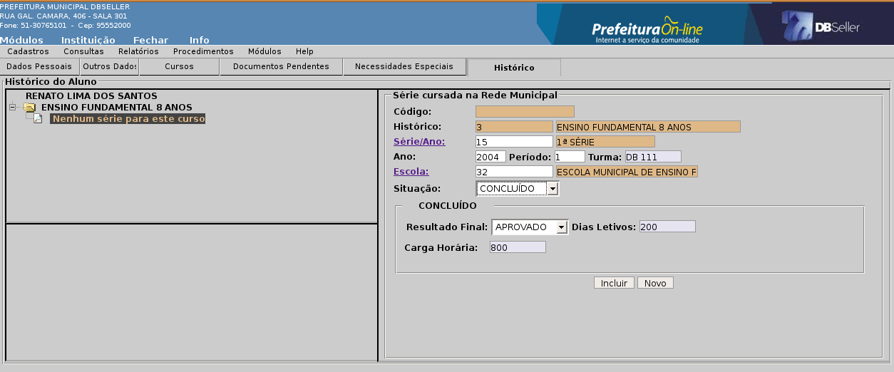
igura
119
F
igura
120
Obs.: Caso a situação seja diferente de CONCLUIDO, deve-se verificar com a direção da escola se será informado tais registros no histórico, pois não é obrigatório o cadastro de registros onde o aluno não concluiu a série no calendário informado, o mesmo refere-se para calendários em que o aluno reprova.
Após a inclusão da série, o sistema mostrará no lugar do link “nenhuma série para este curso” outra pasta com a descrição do nome da série cadastrada, ao clicar no símbolo de adição, o sistema abrirá o link “Nenhuma disciplina para esta série”, clique novamente no link, abrirá no lado direito da tela a relação de disciplinas cadastradas no sistema, clique no campo chekbox para habilitar os campos situação, carga horária, resultado e aproveitamento, ao passar o mouse sobre o chekbox, o sistema mostrará a descrição da disciplina. Após marcar e informar todos os resultados das disciplinas que o aluno recebeu nesta série, clique em salvar, conforme mostra a figura 121.
F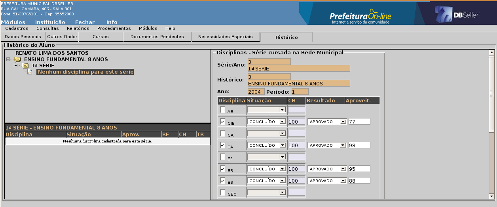
igura
121
Para incluir a próxima série, basta clicar sobre a série incluída anteriormente, o sistema abrirá no lado direito da tela as informações da série selecionada, na parte inferior da tela tem os botões Alteração, Exclusão e Novo, clique no botão novo(figura 122), o sistema retornará para as opções “Escolas da rede municipal” e “Outras escolas”(figura 115), repetindo todo o processo descrito na figura 116. O mesmo procedimento pode ser feito para inclusão de outro curso, caso o aluno tenha concluído alguma série/ano, exemplo: 1ª e 2ª série no ensino 8 anos e a partir do 4º ano no ensino 9 anos, para isto, basta clicar sobre a pasta do curso já incluído.
F igura
122
igura
122
Alteração
O sistema somente irá permitir alterar os dados de um aluno, caso este esteja matriculado na escola, com exceção da aba curso, os campos das demais abas estarão habilitados para inclusão e alteração.
Consultas
Neste menu você encontra a consulta de itens somente na tela, itens como o diário de classe, transferências entre turmas, matrículas pendentes, alunos matriculados, recursos humanos, calendário, horário das turmas e progressão de alunos.
Alunos
O sistema permite ao usuário fazer uma consulta completa sobre o aluno, trazendo informações como documentos cadastrais, matrículas, histórico, se é portador de necessidades especiais e movimentação, permitindo também emitir um relatório da consulta realizada.
Para realizar a consulta basta efetuar a pesquisa usando um dos filtros disponibilizados, ou seja, pelo código do aluno no sistema, nome do aluno, nome do pai, nome da mãe ou pela escola em que esta matriculado, conforme mostra a figura Consulta Aluno1, o sistema listará os registros encontrados.
Selecione o aluno clicando em seu registro, abrirá uma função com todas as informações que foram cadastradas e alimentadas no sistema (figura Consulta Aluno 2), no lado esquerdo abaixo da foto do aluno estão localizados os links de informações, basta clicar sobre eles para o sistema abrir os campos.
Link
Documentos: Informações da documentação do aluno informada no sistema (figura documentos).
Outras Informações: Refere-se ao demais dados do aluno como nome do par e da mãe, responsável legal, se utiliza transporte escolar e se possui bolsa família (figura outras informações).
Necessidades Espaciais: Se no cadastro do aluno for informado que o mesmo é portador de alguma necessidade especial o sistema irá informar a necessidade, se possui apoio pedagógico e o tipo de diagnostico (figura necessidades).
Matrículas: Estas informações já virão como padrão ao acessar a rotina, o sistema mostra informações relativas a matrícula do aluno como data, situação, informações da turma em que o aluno esta matriculado, calendário, grade com as avaliações do aluno e abaixo as outras matrículas do aluno (figura matrículas).
Histórico: O sistema trará o registros das séries que o aluno já concluiu, disciplinas cursadas, aproveitamento que recebeu, carga horária e etc (figura histórico).
Movimentação Escolar: O sistema listará toda a movimentação do aluno na rede, matrículas ativas, encerradas, rematrículas, transferências, progressões e etc (figura movimentação).
Professores
Para consultar alguma informação referente a um determinado professor o sistema disponibiliza três filtros de pesquisa, matrícula, nome e escola, basta informar apenas um para que o sistema possa realizar a busca. Selecione o professor, abrirá a função com os dados pessoais e a relação de links abaixo da foto (figura Consulta Professor).
Links
Dados Admissionais: O sistema trará dados referenste a admissão do professor, data, lotação, cargo e tipo(figura dados admissionais).
Documentos: Documentação do professor registrada no sistema (figura documentos).
Escolas: O sistema ira trazer o nome das escolas nas quais o professor esta vinculado e a data que ingressou (figura escolas).
Horários: Relação do horário de aula professor na escola na qual esta vinculado, o sistema disponibiliza dois filtros de pesquisa que deverão ser informados, após selecionar a escola na qual consultará os horários informe o calendário e clique em pesquisar, o sistema abrirá abaixo a grade de horários com as informações dos períodos em que o professor estará em sala de aula (figura horários).
Recursos Humanos
Nesta consulta você irá selecionar a atividade que deseja pesquisar os recursos, após clique em procurar, o sistema listará abaixo todos os recursos que vinculados a esta atividade, conforme mostra a figura consulta RH.
Diário de Classe
Transferências entre turma
Matrículas Pendentes
Alunos Matriculados
Calendário
Horário das Turmas
Progressão de Alunos
Turmas Encerradas
Lista de Candidatos
Relatórios
Alunos
Histórico escolar
Certificado de conclusão
Ficha do aluno
Atestado de vaga
Alunos por sexo
Alunos com bolsa escola
Alunos com transporte escolar
Ata de progressão de alunos
Atestado de Freqüência

Figura atestado 1
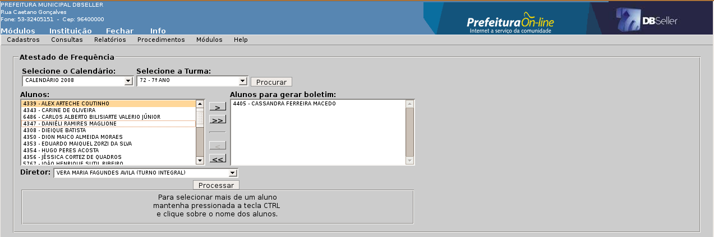
Figura
atestado 2

Figura
atestado 3
Turmas
Diário de classe
Boletim de desempenho
Resumo de aproveitamento
Conselho de Classe
Quadro de resultados finais
Ata de resultados finais
Horário das turmas
Parecer Manual
Lista das turmas
Relatório Editável
Matrículas
Alunos matriculados
Documentação pendente
Boletim estatístico
Relatório Anual
Este relatório trará informações dos alunos matriculados no inicio do ano letivo, alunos matriculados após o censo, total de matrículas, transferências após censo escolar, total de matrículas no final do ano letivo, número e porcentagem de alunos aprovados, e número e porcentagem de alunos reprovados por rendimento e infrequência. Também sairá no relatório o total de alunos reprovados em cada disciplina, para emitir o relatório, informe a data do encerramento do calendário escolar e clique no botão processar, conforme mostra a figura Rel.Anual, o sistema irá abrir a página de impressão do relatório (figura Rel.Anual1).

Figura
Rel.Anual
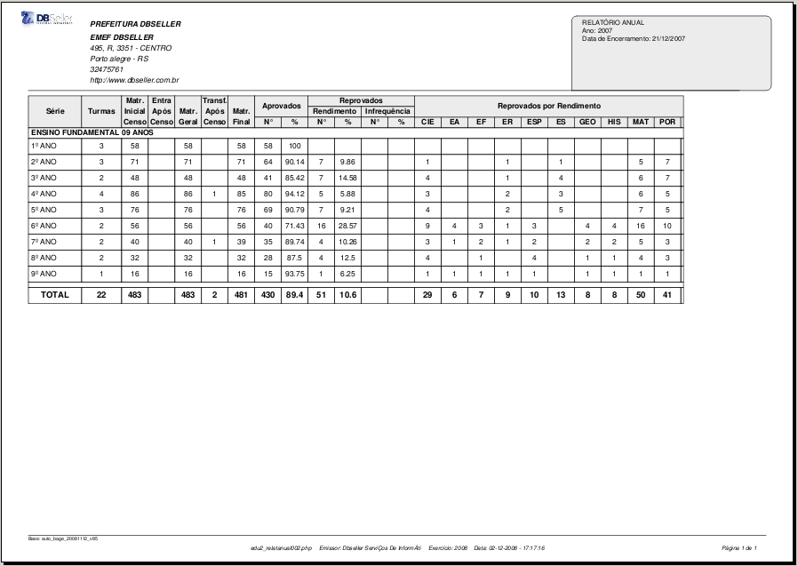
Figura
Rel.Anual1
Recursos Humanos
Dados do Professor
Horários do Professor
Professores por Escola
Atividades
Efetividade do RH
Transferências
Transferência por período
Relatório utilizado para conferência das transferências realizadas em um determinado período informado pelo usuário. Neste relatório o sistema já trará como padrão o período 1º de janeiro a 31 de dezembro do ano calendário, escolha o tipo de transferência e clique em processar, conforme mostra a figura transferência 1, o sistema abrirá em seguida a página para impressão com a relação dos alunos transferidos no período informado (figura transferência 2).

Figura
transferência 1

Figura
transferência 2
Guia de transferência
Relatório que acompanhará a transferência do aluno, este relatório será gerado na inclusão da transferência do aluno e reimpresso nesta rotina. Para emitir este relatório, basta selecionar o ano e o tipo de transferência(figura guia 1), após clicar no botão procurar, o sistema irá abrir os campo alunos (relação dos alunos da turma) e o campo alunos para gerar guia (figura guia 2), selecione o aluno e clique na seta existente entre os campos, passando o aluno para o campo em branco, informe o diretor vigente e clique em processar, o sistema abrirá a página de impressão da guia com as informações do aluno (figura guia 3).

Figura
guia 1

Figura
guia 2

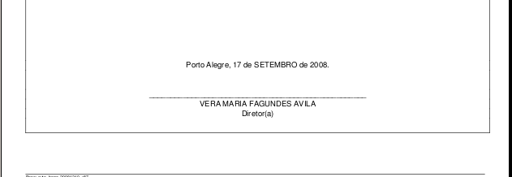
Figura
guia 3
Pareceres
Calendário
Censo escolar
Listagem de Alunos
Gráficos
Turmas
Aproveitamento geral
Aproveitamento por período
Freqüência - individual por turma
Freqüência - comparação entre turmas
Aluno
Aproveitamento por período
Aproveitamento geral
Freqüência
Escolas
Aproveitamento geral – disciplinas
Aproveitamento geral – série
Freqüência por séries
Procedimentos
O menu procedimentos consiste na fase principal do sistema, onde todas as rotinas da secretaria, como diário de classe, matrículas, efetividade, transferências, atestado de vaga, entre outras estão integradas.
Diário de Classe
Lançamentos por Período
Nesta janela está disponível para a seleção uma árvore com a seguinte hierarquia: calendários, cursos, bases curriculares e turmas. Disponível a partir da seleção de turma e especificação da uma disciplina, apresenta todas as disciplinas vinculadas à turma, obtidas a partir das regências de classe associadas a turma, conforme mostra a figura diário de classe. O diário de classe apresenta um resumo de todas as atividades realizadas em classe. É atualizado a partir do livro diário de classe do professor. Contem detalhes sobre a avaliação individual, amparos legais e outros. No diário de classe além do fluxo normal de avaliação e controle de freqüência dos alunos, também podemos registrar diversas situações de exceção, como amparos legais, abonos de faltas, observações e parecer descritivo para alunos que possuem algum tipo de deficiência, por aluno, por período de avaliação. No diário de classe consta o fluxo geral da avaliação escolar. Consta o registro das AVALIAÇÕES e FREQUÊNCIAS, registro de NOTAS e FALTAS, a partir dos diários de classe devolvidos pelos professores ao final de cada período de avaliação. O fechamento das avaliações, geração dos resultados finais, o históricos será informado automaticamente a partir do diário de classe.
Após a escolha da disciplina aparecerão as abas do diário de classe. No final de cada período de avaliação, sendo ele bimestral, trimestral ou semestral, primeiramente será informado a quantidade de dias letivos, em seguida serão cadastradas todas as notas dos alunos sucessivamente até o final do ano, onde o sistema calcula automaticamente o resultado final e dependendo do mesmo ele aprova ou reprova o aluno. Em escolas que possuem recuperação o sistema desabilita o campo para inserir a nota recuperada para alunos que não atingirem a média no determinado período e para os demais aprovados não. Após informar todas as avaliações do ano, encerra-se o ano letivo.
Figura Diário
de classe
Aba Geral
Nesta guia temos as informações preliminares do calendário, da disciplina selecionada. Além dos dados que são colocados automaticamente pelo sistema, vale salientar a informação "Atualizada até" com o último período de avaliação no qual foi feita a última atualização dos dados desta disciplina, neste calendário ou encerrado quando o diário já estiver encerrado.
Aulas dadas/Dias Letivos: Informe para cada avaliação periódica, o número de aulas dadas ou dias letivos da disciplina em questão, conforme o controle de freqüência da turma (figura dia letivo). Esta possibilidade de informação das aulas dadas é disponibilizada apenas para as disciplinas que possuem controle de freqüência. Este quadro para informação de aulas dadas, não esta disponível quando o controle de freqüência é feito por meio de regência globalizada. Neste caso estes valores serão carregados e atualizados somente para a disciplina globalizada, que é aquela que recebe freqüência. Os tipos de disciplinas são os seguintes:
Disciplina globalizada: Com informações de freqüência e avaliação, ou com informações só de freqüência.
Disciplina tratada: Com informação só de avaliação ( a freqüência é controlada só na disciplina globalizada).

Figura
dia letivo
Abas das Avaliações Periódicas
Nestas abas serão informadas os aproveitamentos e faltas dos alunos, sendo ele avaliado por nota, nível/conceito ou parecer no período de avaliação. No caso da avaliação por parecer, caso o parecer deva ser armazenado, ao clicar no campo PARECER (figura Avaliação Parecer), o sistema abrirá outra função onde será digitado o texto do parecer descritivo e marcado os pareceres padronizados (se a escola utilizar) (figura Parecer Descritivo). Se a turma for avaliada por nota, basta informar as notas dos aluno (figura Avaliação Nota) e, se forem avaliados por nível/conceito basta selecionar o item no campo combobox (figura Avaliação Nível), poderá ainda ocorrer que na turma cuja a avaliação seja nota ou nível, possuir alunos avaliados através de parecer descritivo, neste caso deverá ser informado as notas e parecer (figura Avaliação Nota e Parecer). Se o aluno possuir data de matrícula posterior ao termino do período de avaliação selecionado o sistema irá mostrar uma mensagem com a relação dos alunos solicitando que tais notas já informadas sejam postas na origem NE (nota externa) ou que seja verificado a data de matrícula do aluno, pois poderá estar incorreta, conforme mostra a figura Matrícula Posterior

Figura
Matrícula Posterior
Parecer: Informe o parecer do aluno relativo ao período de avaliação. Ao clicar na caixa de texto parecer (figura Avaliação Parecer), o sistema abrirá a função para digitar o Parecer do aluno e marcado os pareceres padronizados (figura Parecer Descritivo), se a escola trabalhar com parecer padronizado, bata pesquisa-lo na função parecer (figura função Parecer), o sistema listará os pareceres cadastrados no menu cadastros/tabelas/pareceres.
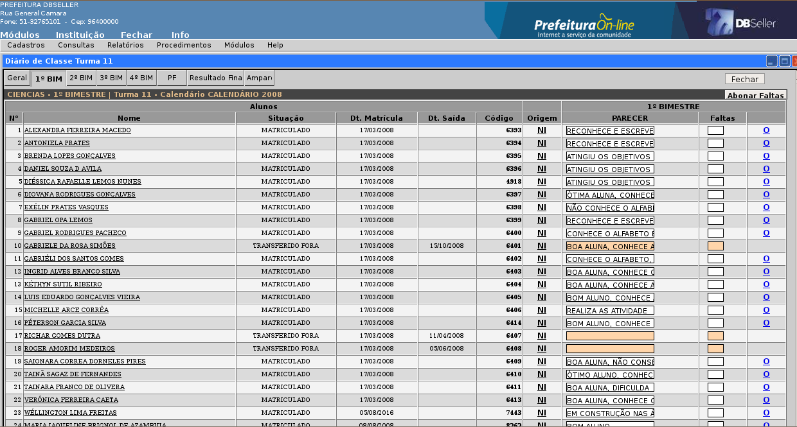
Figura
Avaliação Parecer

Figura
Parecer Descritivo

Figura
Função Parecer
Nota: Informar a nota do período de avaliação. Deve ser considerada a variação da nota (0,1; 0,2; 0,5) estabelecida na forma de avaliação, além da nota mínima e máxima, conforme mostra a figura Avaliação nota. Esta coluna é desabilitada quando a disciplina que estiver sendo editada for de regência globalizada, que informa só a freqüência.

Figura
Avaliação nota
Nível/Conceito: Informe o nível/conceito do aluno relativo ao período de avaliação, de acordo com o padrão estabelecido pela forma de avaliação, busque no campo combobox nível/conceito que o aluno recebeu neste período. Esta coluna é desabilitada quando a disciplina que estiver sendo editada for de regência globalizada, que informa só a freqüência.

Figura
Avaliação Nível/Conceito
Nota e Parecer : Informe notas para os alunos que serão avaliados por esta forma de avaliação e parecer para o aluno que será avaliado através de parecer referentes ao período de avaliação.

Figura
Avaliação Nota e Parecer
Faltas: Informe as faltas relativas ao período de avaliação. Esta coluna só será habilitada se a avaliação for relativa a um período de avaliação com controle de freqüência. O valor informado não pode ser maior que o número de aulas dadas/dias letivos e nem menor que o número de faltas abonadas do aluno, se foram registradas em faltas abonadas. A atualização das aulas dadas não é permitida quando a disciplina da regência que está sendo editada é "Tratada", de uma turma em que o controle de freqüência da turma é feito por meio de uma regência globalizada. Uma disciplina globalizada sempre recebe freqüência, e pode ou não receber avaliação (nota, conceito ou parecer). A disciplina "tratada" nunca recebe freqüência, recebendo sempre só a avaliação.
Obs.: Se houver amparo legal específico para algum aluno/período de avaliação, não será permitida a atualização de aproveitamento e faltas para este aluno neste período de avaliação.
Aba Cálculo Final (NF, MF, MFG, NFG ou PF)
Nesta aba o sistema irá efetuar o cálculo da nota final do aluno automaticamente. O sistema aplicará a proporcionalidade caso não for informado alguma nota do aluno em algum dos períodos de avaliação, mas mostrará no campo NOTA a descrição EM BRANCO na cor vermelha, se informado todos os períodos, o sistema mostrará a nota do aluno na cor verde, na coluna a direita o sistema informará a nota final do aluno e a forma de obtenção da nota, conforme mostra a figura NF. Caso a turma seja avaliada por parecer o sistema exigira que seja informado o parecer final do aluno (figura funcparec), lembrando que o preenchimento do campo parecer do aluno nos períodos de avaliação não é obrigatório, após informar o parecer final do aluno, informe se este esta aprovado ou reprovado (se no cadastro da turma estiver marcado SIM no campo “aprovação automática, este não precisará ser informado), conforme mostra a figura PF.

Figura
NF
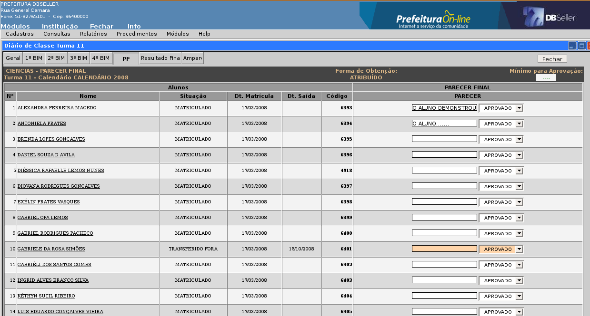
Figura
PF
Aba Resultado Final
Esta aba mostrará os resultados finais referentes ao aproveitamento e freqüência do aluno. Só será completada após o preenchimento de todas as avaliações e resultados. Para executar os cálculos, são avaliadas todas as colunas de resultados. Nesta aba constam todas as avaliações periódicas que devem ser utilizadas para compor o valor do resultado, conforme cadastrado no resultado de avaliação. O valor mínimo a ser considerado para avaliações periódicas no resultado é avaliado pelo sistema. Se o valor da avaliação periódica informado for menor do que o cadastrado neste campo, o resultado final com base no aproveitamento será "reprovado", independente do valor final obtido após o cálculo do resultado. Se a avaliação periódica é obrigatória para o cálculo do resultado, o resultado só pode ser calculado se esta avaliação tiver um valor correspondente. O sistema calcula todos os resultados possíveis (que tenham todos os elementos obrigatórios disponíveis), conforme mostra a figura Resultado Final.
Caso um aluno tiver avaliação periódica com amparo em um período de avaliação, o cálculo é realizado levando em consideração somente os demais períodos de avaliação.

Figura
Resultado final
Obs.: O sistema permitira a alteração do resultado final do aluno gerado pelo sistema, sendo que, ao clicar no botão “Alterar Resultado Final” na parte superior direita da figura Resultado final, o sistema irá abrir a função de pesquisa para alteração do resultado final dos alunos considerado reprovados pelo sistema (figura alterar resultado).
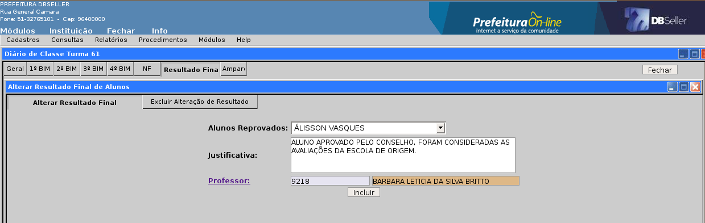
Figura
Alterar Resultado
Campos
Alunos Reprovados: relação dos alunos reprovados pelo sistema, selecione o aluno desejado.
Justificativa: Informe a justificativa(motivo) considerado pelos professores para aprovação do aluno.
Professor: Ao clicar no link o sistema abrirá a função de pesquisa com todos os professores da escola, conforme mostra a figura relação professores.

Figura
relação professores
Para excluir uma alteração de resultado final basta pesquisar no campo combobox o nome do aluno, o sistema irá carregar os campo justificativa, professor, data e usuário, clique no botão excluir, o sistema retornará para o resultado inicial, conforme mostra a figura Exclusão Alteração Resultado.

Figura
Exclusão Alteração Resultado
Aba Amparo
Os amparos legais são as situações descritas em lei que dispensam o aluno de receber aproveitamento em uma disciplina por todo período letivo ou por um período de avaliação específico. Nesta aba pode-se incluir, alterar ou excluir amparos.
Selecione os alunos e os períodos do amparo, informe a Justificativa Legal para o amparo e informe se vai gerar carga horária para o histórico.
- Link Observação O
Campo disponível para informar alguma informação do aluno que precise constar no boletim, conforme mostra a figura função observação.

Figura
função observação
- Link Parecer descritivo P
Campo disponível para informar o parecer descritivo para aluno que possuem deficiência e não são avaliados por nota, conforme mostra a figura funcparec.
Encerrar Avaliações
Geração automática dos resultados de aprovação ou reprovação dos alunos com base em um aproveitamento cumulativo, cadastrado ou calculado no decorrer do período definido pelo calendário. Ao clicar no botão "Encerrar Avaliações" (figura diário de classe), o sistema realizará a geração dos resultados finais, executando as operações e detectando eventuais problemas que são listados após a geração. O sistema lista os alunos que estejam faltando alguma informação para o encerramento (figura Encerramento 1). Caso não existam problemas o sistema lista os alunos que estão aptos para encerrar as avaliações (figura Encerramento 2). Após o encerramento, o sistema inclui no histórico do aluno todas as informações referentes a este encerramento, tais como cursos, série e disciplinas das séries e aproveitamentos do aluno.


Figura
Encerramento1
Figura Encerramento 2
Cancelar Encerramento de Avaliações
A ação de cancelamento do encerramento tem a finalidade permitir a correção de faltas e aproveitamento do aluno, possibilitando um novo cálculo de resultado final. Se já existir histórico do mesmo ano e período da turma ele será excluído.
Para cancelar o encerramento de avaliação de um aluno ou de toda uma turma, clique no botão “Cancelar Encerramento de Avaliações”. Somente poderá ser cancelado os alunos que não tiverem concluído o curso.

Figura
Cancelar Encerramento
Matrículas
Matricular Aluno
Aba Matrícula
Matricular alunos na turma. Busque a turma que deseja e aparecerá os alunos em condições de matrícula para a série da turma escolhida. Virão todos os alunos com situação de Candidato, Aprovado e Reprovado (para ver situação do aluno no curso veja menu Cadastros > Alunos > aba Cursos). Escolha os alunos na caixa esquerda e passe-os para a caixa da direita, confirmando a matricula em Incluir.
Aba Alunos
Mostra os alunos matriculados na turma. Clicando na linha de cada aluno abrirá um formulário com informações da matrícula do aluno e um espaço para observações.
Classificar Turma: colocar os alunos em ordem alfabética e por esta ordem numera-los.
Alterar Situação da Matrícula
Aba Matrícula
Clicando sobre o link em azul TURMA, você pesquisará a turma que deseja e selecione o aluno que terá a situação de matrícula alterada. Selecione uma das opções a seguir: Matriculado, Evadido, Cancelado e Falecido, só então clique em incluir. O aluno ainda continuara no diário de classe da turma, mas o campo para inserir a nota não estará habilitado.
Aba Alunos
Mostra os alunos matriculados na turma. Clicando na linha de cada aluno abrirá um formulário com informações da matrícula do aluno e um espaço para observações.
Classificar Turma: colocar os alunos em ordem alfabética e por esta ordem numera-los.
Excluir Matrícula
Aba Matrículas
Clicando sobre o link TURMA, você pesquisará a turma que deseja e selecione o aluno que terá a matrícula excluída, só então clique em incluir. O aluno não aparecerá mais no diário de classe da turma.
Aba Alunos
Mostra os alunos matriculados na turma. Clicando na linha de cada aluno abrirá um formulário com informações da matrícula do aluno e um espaço para observações.
Classificar Turma: colocar os alunos em ordem alfabética e por esta ordem numera-los.
Trocar Aluno de Turma
Pesquise a matrícula do aluno e depois informe a turma de destino. O aluno somente poderá ser transferido para turma do mesmo calendário e série e que tenham o mesmo procedimento de avaliação e mesma base curricular.
Progressão de Aluno
Procedimento para progressão de aluno durante um mesmo calendário, nos casos em que um aluno tem aproveitamento superior ao que é exigido nas avaliações da série/ano, podendo este ser avançado para a série/ano seguinte. Divide-se em:
Avanço
Válido somente para a 1ª série/ano do ensino fundamental.
Selecione o aluno e busque a turma de destino. Serão listadas todas as turmas disponíveis da série/ano seguinte a que o aluno está matriculado. Todas as informações do aluno na turma de origem, tais como: avaliações, faltas, serão repassadas automaticamente para a turma de destino.
Classificação
Válido para as demais séries/anos. Selecione o aluno e busque a turma de destino. Serão listadas todas as turmas disponíveis da série/ano seguinte a que o aluno está matriculado. Todas as informações do aluno na turma de origem, tais como: avaliações, faltas, serão repassadas automaticamente para a turma de destino.
Atestado de Vaga
Inclusão
Procedimento utilizado somente para realizar transferências entre escolas da rede municipal. Será incluído um atestado de vaga para um aluno que deseja ser transferido para sua escola, informe os campos conforme mostra a figura Atest01.

Figura
Atest01
Aluno: informe o aluno para o atestado. Serão listados todos os alunos de outras escolas da rede municipal que estejam com situação de matrícula (MATRICULADO, APROVADO) (figura Atest02).

Figura
Atest02
Base Curricular: Clique no link, o sistema abrirá outra função com as bases curriculares cadastradas no sistema, selecione a base desejada (figura Atest03).
Figura Atest03

Série:
Ao clicar no link, o sistema irá informar automaticamente o
campo.
Turno: Ao clicar no link, o sistema irá abrir a função de pesquisa com os turnos em que sua escola possui turmas cadastradas(figura Atest04).

Figura
Atest04
Calendário: Ao clicar no link, o sistema irá abrir a função de pesquisa com os calendários cadastrados no sistema (figura Atest05), selecione o calendário desejado e clique no botão incluir (figura Atest01), o sistema irá abrir na tela a página de impressão do atestado em duas vias (figura Atest06).

Figura
Atest05

Exclusão
Para efetuar a exclusão de um atestado de vaga, a escola de origem não poderá ter transferido o aluno para sua escola, sendo assim, ao acessar a rotina o sistema abrirá a função de pesquisa com todos os atestados emitidos pela escola (figura Atestexc), selecione o atestado a ser excluído e clique em excluir, conforme mostra a figura Atestexc2.
Efetividade
Cadastro da efetividade dos recursos humanos da escola.
Inclusão
Aba Competência

Informe
o mês e ano de competência da efetividade e o tipo:
professores ou funcionários. Após a inclusão
nesta aba, habilitará a aba Efetividade.
Figura competência
Aba Efetividade
Nesta aba serão incluídas as informações da efetividade. Estará listado todo o recurso humano da escola conforme a atividade. Para liberar os campos basta clicar no campo a esquerda da tela, selecionando assim, o recurso humano a ser informado. Se a atividade tiver marcada como docência, a opção “SIM” (Menu Cadastro/ Tabelas/ Atividades), o recurso humano será listado na efetividade dos professores, do contrário será listado na efetividade dos funcionários. Após informa a efetividade, ela pode ser consultada e impressa no menu relatórios/recursos humanos/efetividade, selecionar o mês e o tipo, abrirá uma página para impressão com as informações cadastradas.

Figura
efetividade
Alteração
Selecione a efetividade a ser alterada na função de pesquisa (figura alteração efetividade), o sistema habilitará todos os campos de ambas as abas para alteração (figuras competência e efetividade).

Figura
alteração efetividade
Exclusão
Transferências de Alunos
Transferências Entre Escolas da Rede
Realiza transferências entre escolas da rede municipal, através de um atestado de vaga.
Código do Atestado: busque um atestado de vaga emitido por outra escola para o aluno a ser transferido. Após selecionar o atestado, serão mostradas a situação atual do aluno na escola e os dados da escola de destino. Confirme a transferência em “Incluir”. A situação do aluno passa para “TRANSFERIDO REDE”.
Transferências para Outras Escolas
Realiza transferências de alunos de escolas da rede municipal para outras escolas (Estaduais, Particulares, etc)
Aluno: busque o aluno de sua escola a ser transferido. Após selecionar o aluno será mostrada sua situação atual na escola.
Escola Destino: busque a escola de destino do aluno. Caso não tenha a escola desejada na lista, basta adicionar nova escola clicando em “Nova”. Caso não tenha a informação de destino, cadastre uma escola de procedência com o nome de “Escola Indefinida”. A situação do aluno passa para “TRANSFERIDO FORA”.
Matricular Alunos Transferidos
Procedimento para matricular somente alunos transferidos entre escolas da rede municipal.
Aluno: o sistema irá buscar todos os alunos com a situação “TRANSFERIDO REDE” para sua escola. Após selecionar o aluno, serão mostrados os dados de origem e destino.
Turma de Destino: busque a turma de destino. Serão listadas todas as turmas compatíveis com a série/ano de destino informadas no atestado de vaga. Confirme a transferência no botão “Confirmar Transferência”. O aluno será matriculado na turma de destino, sendo importados todos os dados de avaliações e faltas da escola de origem.
Aprovação Automática
Neste procedimento será informado quais séries terão aprovação automática, ou seja, todos os alunos que cursarem estas séries, automaticamente estarão aprovados. selecione o calendário e em seguida as séries que terão aprovação automática, o sistema abrirá abaixo um campo com todas as turmas da série selecionada, selecione as turmas que serão automatizadas e clique em salvar, conforme mostra a figura aprovação.
Figura aprovação
Para ver todas as turmas com aprovação automática basta clicar no botão “Ver quadro Geral”, o sistema abrirá outra função(figura quadro geral).
Figura quadro geral
Conclusão de Curso
Concluir Curso
Informe o curso e a base curricular para o sistema procurar os alunos para conclusão de curso. O sistema irá verificar no histórico do aluno se ele cumpriu todas as séries e disciplinas da base curricular informada, listará os alunos que faltam alguma série ou disciplina para cumprir e os alunos aptos para concluir o curso informado.
Selecione os alunos que concluíram o curso e passe da caixa esquerda para a caixa da direita, clicando em incluir para finalizar a operação.
Cancelar Conclusão de Curso
Para cancelar a conclusão de curso você deverá informar o curso, em seguida os alunos que terão o curso cancelado, para confirmar, clique em incluir.
Migração de Dados
A utilização deste procedimento caracteriza-se para municípios que possuem escolas com difícil acesso para instalação de uma rede de internet, um exemplo são as escolas rurais, localizadas fora dos centros urbanos, não captam um sinal de rede.
Secretaria / Escola
Exportar dados
Neste menu é feita a exportação dos dados da secretaria para a escola, para que a escola possa continuar os cadastros no sistema
Importar dados
Neste menu será feita a importação dos dados que a escola cadastrou no escola local, atualizando todo o sistema.
Escola / Secretaria
Exportar dados
A escola fará a exportação dados cadastrados, ou seja, o sistema fará uma cópia de todas as informações que a escola cadastrou no sistema desde a ultima migração, ao fazer a exportação, o sistema ficará desabilitado até que a secretaria retorne com os dados para importação.
Importar dados
Ao realizar a importação dos dados, o sistema desabilitara o sistema para que a escola continue informando o sistema e atualizando as informações.